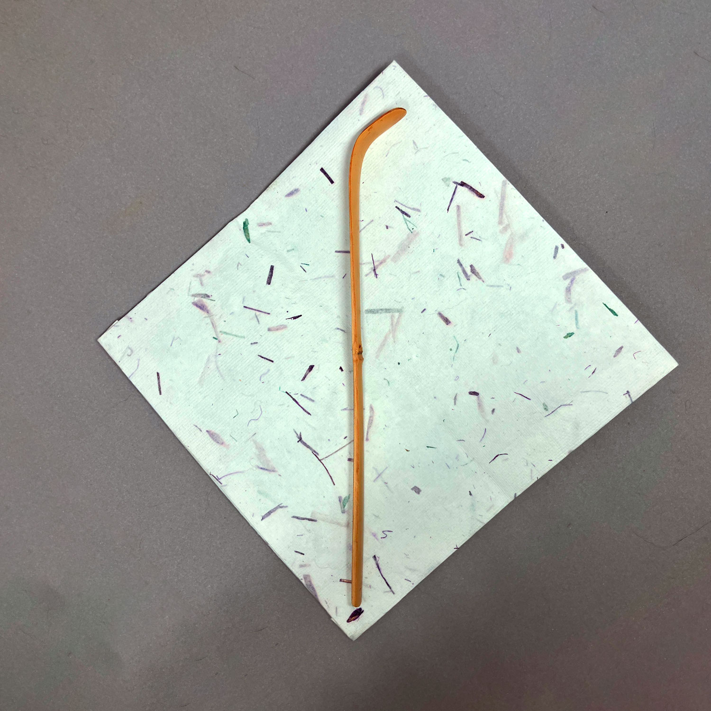
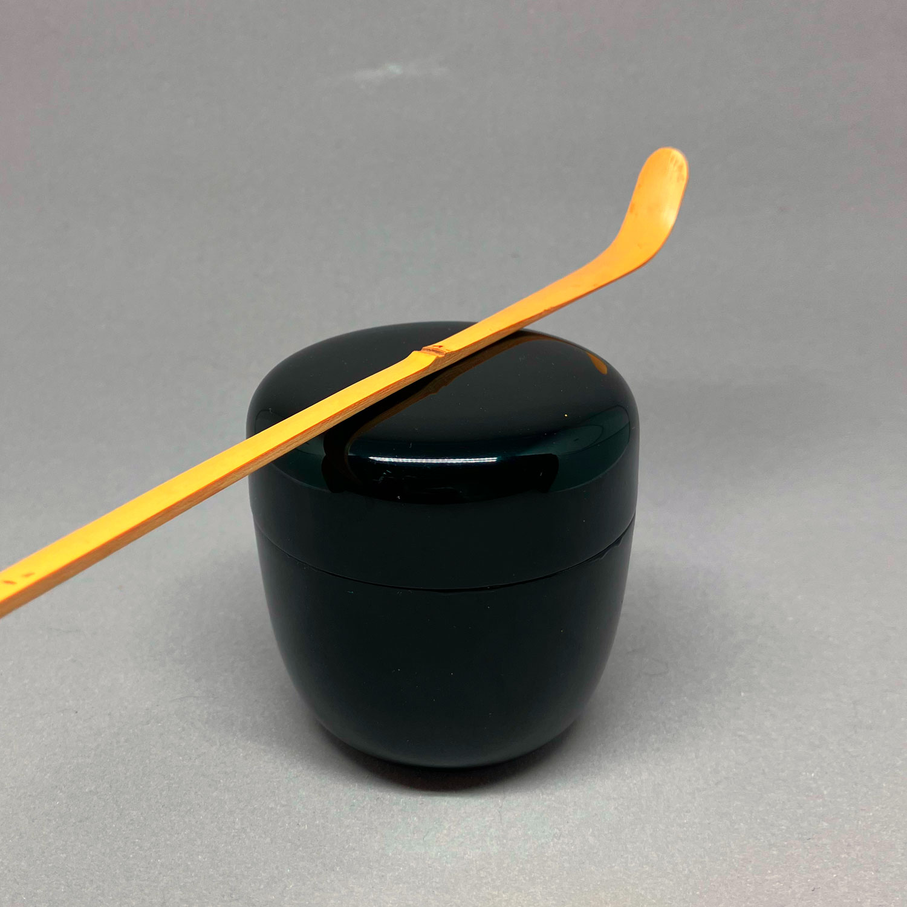
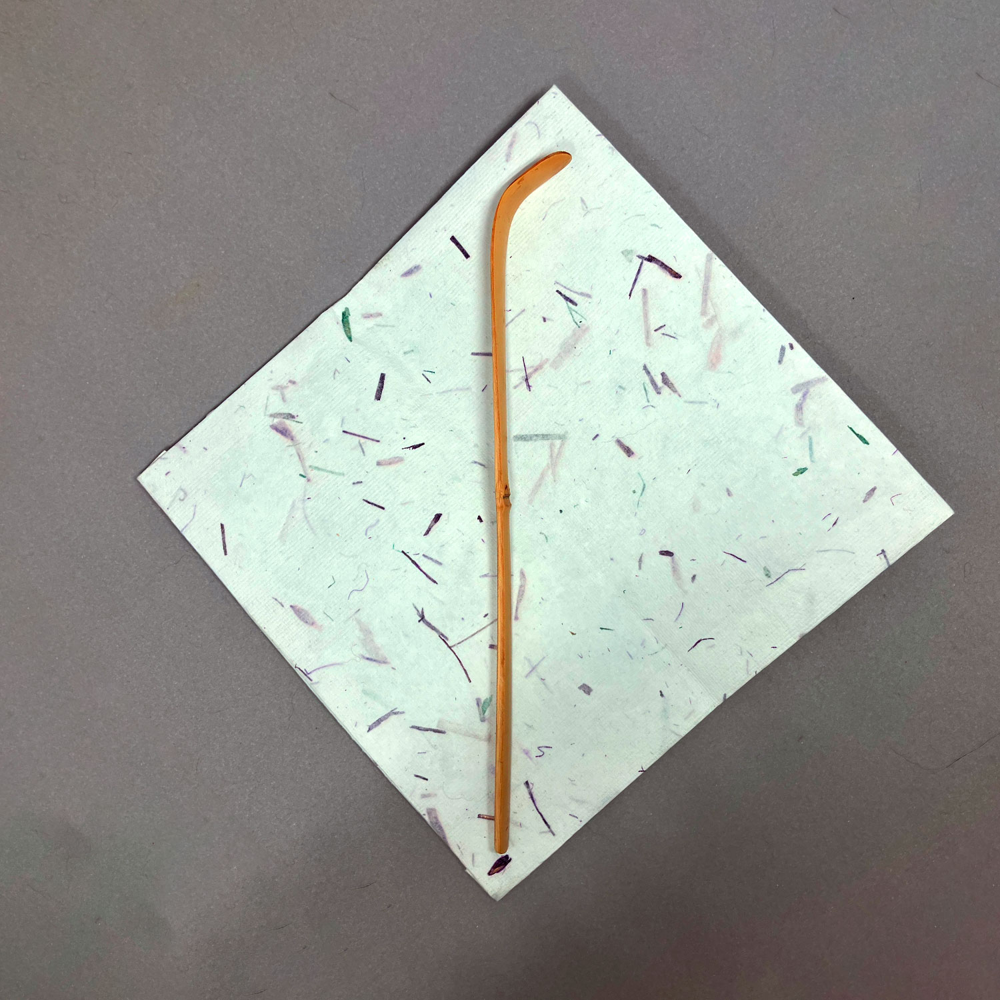
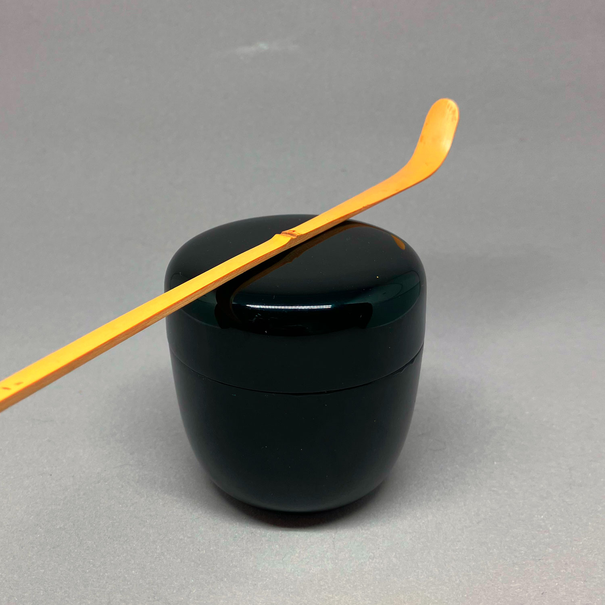

Dorf der Fallenden Blumen「花散里」
maker unknown 80 CHF

Dorf der Fallenden Blumen「花散里」
Dieser Teelöffel ist aus rußigem Bambus gefertigt. Er teilt seinen Namen mit Kapitel 11 in der berühmten Geschichte des Genji: 花散里, was verstreute Blumen im Dorf bedeutet. In diesem Kapitel verbringt Prinz Genji einen regnerischen Sommer-Nachmittag damit, über vergangene Tage zu sprechen und den Duft der gefallenen Zitrusblüten (橘) zu genießen. Ich denke, dass in diesem Teelöffel eine ähnliche Stärke und Melancholie steckt. Er eignet sich besonders gut für den Sommer und wird mit einer Papierschachtel und einem Papier-shifuku geliefert. Das quadratische Papier und die natsume dienen nur zum Größenvergleich und sind nicht enthalten.
Bestellen (Tee-Löffel, zum Preis von 80 CHF) Fenster SchließenDie Reispflanzende「早乙女」
maker unknown 180 CHFDie Reispflanzende「早乙女」
Please provide the text you would like me to translate into German.
Bestellen (Tee-Löffel, zum Preis von 180 CHF) Fenster Schließen
Waldbad「森林浴」
maker unknown 40 CHF
 



Waldbad「森林浴」
Dies ist eine einfache Bambus-Teeschaufel mit einigen interessanten Details in der Nähe des Bodens und in der Nähe des Knotens. Es fühlt sich erfrischend und elegant an, wie ein Spaziergang im Wald. Ihr Name, 森林浴, übersetzt sich wörtlich als Waldbaden oder, wissenschaftlicher ausgedrückt, als Silvotherapie. Während Menschen schon immer die ruhige Gelassenheit eines Waldes genossen haben, gewann der Begriff in den 1980er Jahren an Popularität, als Menschen versuchten, sich wieder mit der Natur zu verbinden.
In dieser Ansicht kann man nicht nur die einfache Bedeutung des Genießens der Natur finden, sondern auch das postindustrielle Verlangen und den Kampf der Menschheit, den Schaden rückgängig zu machen, den wir der Natur zugefügt haben.
Bestellen (Tee-Löffel, zum Preis von 40 CHF) Fenster Schließen